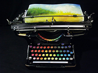
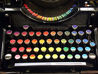

來自華盛頓的藝術家Tyree Callahan做了一個概念性，但是很有意思的藝術作品《Chromatic Typewriter》。他將一台1937年的打字機改造成可以打出七彩的「顏色機」。原本的色帶，換上七彩的小磚。而原來的字母鍵，被貼上相對應色帶上的色票。這個概唸作品在發表以後不僅獲得了獎項，也受到許多報導。而「打」出來的畫作，既帶點抽象派的大筆觸質感，也有水彩渲染的氤氳之美。真的很難想像，竟然是用打出來的！
這是一個很有意思的想法：打字機，不只是打「字」。而是可以換上「色彩」。創意、創造力，就是這樣產生的。創意，是靈感的兌現。是一種突發奇想的連結。那是什麼樣的連結呢？是舊有的認知與想要突破的心與腦力在互相激盪著。然後在一瞬間迸發了！而創造力，是去實踐這些創意時的行動力。
如果藝術家一直受到打字機，就只能打「字」的框架限制，那麼他會想的就是換成不同國家的語言字母，或是任一種文字溝通的符號來創作。如此一來，這個藝術創作相較於「打顏色」所帶給人的驚豔度，就會失色許多。但是因為藝術家跳脫了打字機本身打「字」的「功能框架」，所以，就迸發了其他的可能性！
我們很容易用既定的認知、知識、印象，去看待生活裡的大小事。於是如果每天過著大同小異的日子，做類似重複的事，變會覺得生活少了想像、少了創造、少了美好。所以，千萬不要讓自己落入這樣的情況中。不斷地讓自己去探索、用開闊的心胸接收新知、不停的更新想法，追求進步，然後最重要的是去落實！在生活裡，用這樣的思維與意識去過。相信，會有很不一樣的收穫與改變！
design：Lennon Wang；created：xuedesign studio；develop：Hsukai